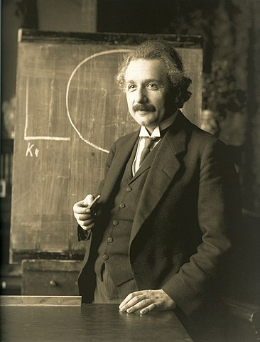

 "Imagination is more important than knowledge....For knowledge is limited whereas imagination embraces the entire world." -- Albert Einstein
Timeline
1879 Albert was born in Ulm, Germany. The family moved to Munich when Albert was one year old.
1884 When Albert was five he was given a compass by his father. He was fascinated by it and how it worked.
1889 He met Max Talmud. Max introduced Albert to math and science. Albert was ten years old.
1894 Albert finished his schooling in Munich with medical training. He moved to Milan with his family.
1895 Albert moved to Switzerland at 16 years old to attend Aarau Cantonal School.
1896 Albert graduates at the top of his class. He was a year younger than the other students.
1901 Albert slacked off in further schooling, even after doing so well. Because of this he had a hard time finding a good job.
1902 Albert Einstein got a job in the patent office. He used his understanding of math and science in his new position, and it made him happy.
1905 Einstein submitted his first paper on his theory of thermodynamics. It was the first of many.
1909 After working at the patent office and writing his theories, Einstein got a job teaching theoretical physics at the University of Zurich.
1911 He was given an invitation to the first-ever world physics conference. He was the youngest physicist there.
1913 He believed science's understanding of gravity was wrong, and he worked on a new theory which he would later test with a solar eclipse.
1919 After publishing his Theory of Relativity and correctly predicting the effects of a solar eclipse, Einstein's name went around the world.
1922 Einstein was awarded his first Nobel Prize. He was on his way to Japan when he got the news.
1933 He visited America for the first time because he feared the rising Nazi party in Germany.
1945 World War II ended and Einstein continued his research. He made advances in heat, gravity, and relativity, and he published over 300 scientific reports.
1955 Albert Einstein died in April of heart failure.